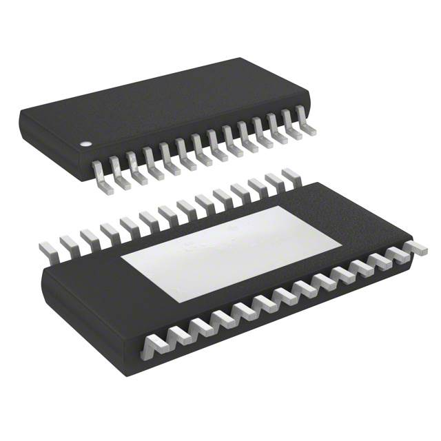
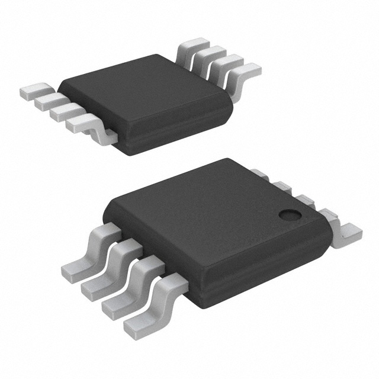
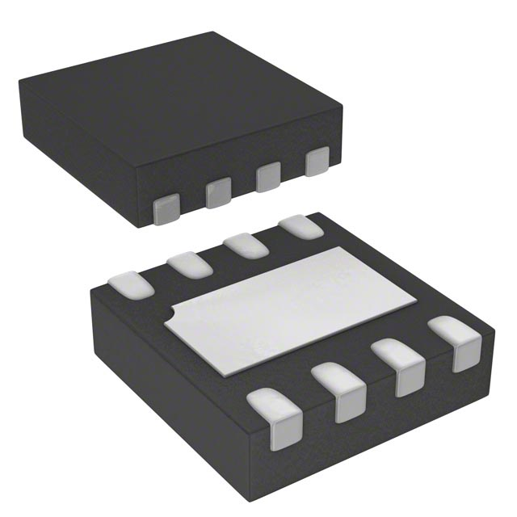

For motor driver selection, I appear to be severely limited. The primary reason being that many of these
motor drivers come
pre-mounted onto daughter-boards, which require justification to use (As per the project requirements).
Ideally the control
logic is at the same voltage as the microcontroller. It also requires control over a serial
communication interface, which
doesn't seem like a difficult task, but it is actually rather difficult. Many allow tuning properties,
such as acceleration
speed over a serial interface, but operate using a pulse-step system.
| Component |
Image |
Advantages |
Disadvantages |
Hyperlink |
| L6470H |

|
- Same logic-voltage as microcontroller
- Relatively-inexpensive
- Precision control over SPI
- Plenty of configuration options
- Backup systems if serial communication fails
- External clock support (Can be synced with microcontroller)
- Error pin allows diagnostics in case of serial communication failure
|
- Definitely overkill for the given application
- Requires a lot of support hardware to utilize all functions
- Intended for far more serious applications, meaning plenty of safety lockouts and
potential sticking points
|
|
| EMC2301-1-ACZL-TR |

|
- Very cheap
- Easy interfacing over PWM
- Configuration done over serial
|
- Impercise position, as it does not operate in steps
- Designed to drive fan motors, which will take adaptation to utilize for my
requirements
|
|
| A3908EEETR-T |

|
- Very cheap
- Operates at microcontroller voltage
- Configuration over SPI
|
- Requires reflow oven to solder
- Low load capabilities, which may be an issue depending on motor
|
|
My Selection
| Component |
Image |
Justification |
| L6470H |
|
None of the options are particularly great, but looking around (And given my understanding
of the requirements),
it appears that this isn't a common issue. Generally stepper motors are controlled by
daughter-boards or utilize
onboard hardware for interfacing, which is against the rules of the assignment. If the rules
change or are redefined
I will likely replace this with an easier option to save time on fabrication.
|